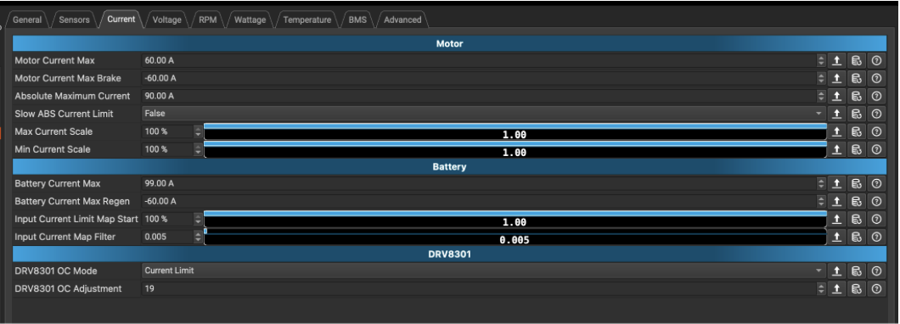
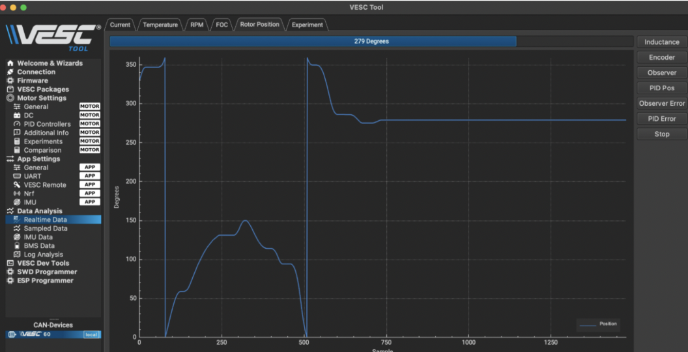

JeepBot Framework
VESC, Encoder, F710 Controller & Raspberry Pi Setup
Reference guide for setting up the JeepBot steering encoder, configuring VESC Tool, installing PyVESC, preparing the Raspberry Pi, and running the F710 dual VESC control script.
Setup Encoder
In VESC Tool, set the motor type to DC motor.
Motor Type:
DC, Brushed MotorAdjust motor and battery current limits if needed. If the battery cannot handle the load or the VESC red light blinks, adjust the current settings.

VESC App Configuration
Enable the encoder and set the VESC app to UART so the Raspberry Pi Python script can send commands through serial.
Set Position Sensor to
Encoder.Set App to Use to
UART.


PID Position Setup & Real-Time Test
Use real-time data in VESC Tool to check PID position control. Set the PID position offset under Motor Settings, then write both app config and motor config.
Move the motor with left/right arrow keys and check encoder feedback.
Tune PID values until the steering motor responds smoothly.
Click
Write App Config and Write Motor Config after changes.

Raspberry Pi Setup Config
Use these values to SSH into the JeepBot Raspberry Pi and connect it to the correct network.
jeepbotjeepbotUCSDRoboCar192.168.139.223Test on Laptop
Clone the PyVESC repository and install it in editable mode before running the JeepBot script.
git clone https://github.com/LiamBindle/PyVESC.git
cd PyVESC
pip install -e .
cd ~/JeepBot_Vesc/dual_vesc_drive_package
pip install -r requirements-steering.txtRun on Raspberry Pi
After the project folder is copied to the Raspberry Pi, activate the correct Python environment, go into the JeepBot controller folder, install the required packages, and run the controller script.
This makes sure the script uses the correct installed packages.
source ~/env/bin/activateThis folder contains the main controller file, pygame joystick file, and requirements file.
cd ~/myjeepbot/mycarInstall the Python packages needed for serial communication and controller input.
pip install pyserial pygame
pip install -r requirements-steering.txtThis checks if the Logitech F710 is detected before sending commands to the VESCs.
python3 myconfig.py --dry-run --no-deadmanThe VESCs should appear as /dev/ttyACM0 and /dev/ttyACM1.
python3 myconfig.py --list-portsRun the controller script using the saved configuration.
python3 myconfig.pyTroubleshooting
Use these commands if the controller, VESC ports, or motor movement is not working correctly.
If the VESC is connected correctly, it should show up as /dev/ttyACM0 or /dev/ttyACM1.
python3 myconfig.py --list-ports
ls /dev/ttyACM* /dev/ttyUSB*This shows joystick axis values without moving the motors.
python3 myconfig.py --dry-run --no-deadmanUse this if the motor does not spin with the default settings.
python3 myconfig.py --no-deadman --drive-axis 3 --max-duty 0.30 --drive-ramp-duty-per-s 2.0If forward and backward are reversed, add the invert-drive option. Then swap that in myconfig.py
python3 myconfig.py --invert-driveIf steering and drive are connected to the wrong VESC, swap the ports. Then swap that in myconfig.py
python3 myconfig.py --steering-port /dev/ttyACM1 --drive-port /dev/ttyACM0